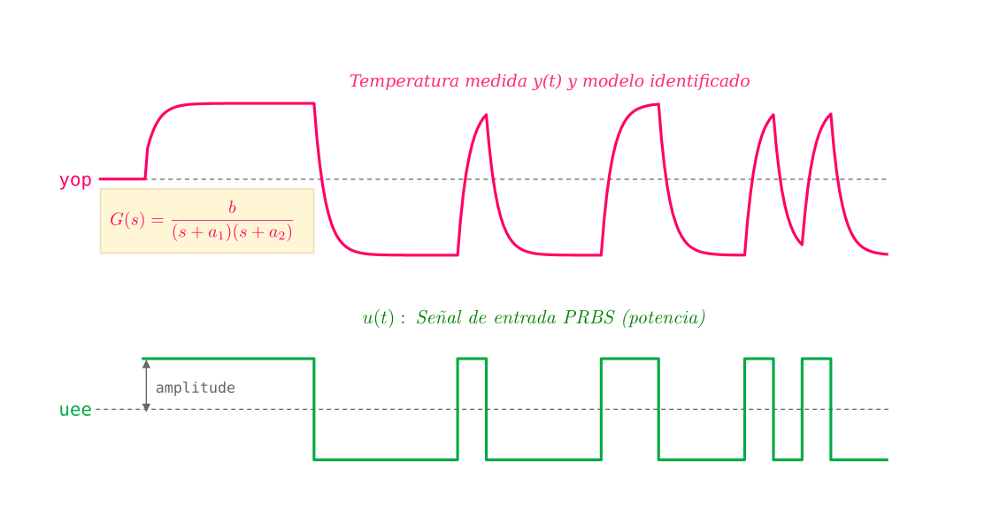

get_model_prbs
ThermoLab.get_model_prbs — Function
get_model_prbs(sys::ThermalSystem; yop=50, amplitude=5, divider=25, numpar=2, usefile=false)Estima los parámetros de un modelo dinámico lineal que relaciona la temperatura de la plataforma ThermoLab con la potencia aplicada. Según el valor de numpar, el modelo puede ser:
numpar=2(por defecto): modelo de primer orden, con dos parámetros ($a$ y $b$):$\qquad G(s) = \dfrac{b}{s+a}$
numpar=3: modelo de segundo orden con dos polos reales, con tres parámetros ($a_1$, $a_2$ y $b$):$\qquad G(s) = \dfrac{b}{(s+a_1)(s+a_2)}$
Para obtener el modelo se realiza un experimento en lazo abierto con prbs_open, aplicando como entrada una onda binaria pseudoaleatoria (PRBS) de potencia alrededor del punto de operación yop, tal como se ilustra en la figura siguiente:

Los parámetros de esta función son los siguientes:
Argumentos
sys::ThermalSystem: objeto que representa la plataforma.
Argumentos de palabra clave
yop::Real=50: temperatura del punto de operación (en °C) alrededor del cual se obtiene el modelo lineal.amplitude::Real=5: amplitud pico de la señal PRBS, en % de potencia.divider::Int=25: número de periodos de muestreo que dura cada bit de la PRBS (verprbs_open). El experimento usa una fase de estabilización de 240 s y una de retención de 10 s.numpar::Int=2: número de parámetros del modelo a estimar:2para el modelo de primer orden $b/(s+a)$ o3para el modelo de dos polos $b/((s+a_1)(s+a_2))$.usefile::Bool=false: si estrue, no se realiza un experimento nuevo, sino que se usan los datos del último experimento PRBS guardado endatafiles/ThermoLab_prbs_open_exp.csvpara estimar los parámetros del modelo.
Retorna
G::ControlSystemsBase.TransferFunction: modelo de la temperatura identificado a partir de los datos PRBS (de uno o dos polos, segúnnumpar).L::Float64: retardo, fijado en un periodo de muestreo (0.8 s).
Lanza
ErrorExceptionsinumparno es2ni3.
Notas
- La identificación se hace sobre las desviaciones de
uyyrespecto a sus valores medios durante la PRBS. - Con
numpar=2se ajusta un modelo ARX discreto de orden (1,1) con retardo de una muestra, usando el estimador de ControlSystemIdentification.jl, y el modelo discreto resultante se convierte a tiempo continuo con la funciónd2c. - Con
numpar=3se realiza una identificación de caja gris con el método del error de predicción (structured_pemde ControlSystemIdentification.jl), estimando directamente $a_1$, $a_2$ y $b$ del modelo continuo. - Al finalizar, se muestra una gráfica que compara la salida experimental con la simulada por el modelo (indicando el porcentaje de ajuste, o FIT). Los parámetros estimados se pueden pueden recuperar luego con
tf,ssoget_last_modelusando el el valor denumparrequerido.
Ejemplo
Primero, asegúrese de haber importado el paquete ThermoLab y de haber definido el sistema, así:
using ThermoLab
sys = ThermalSystem();Es recomendable, al usar por primera vez la plataforma, obtener el modelo estático para que haya una buena calibración del punto de operación, así:
uee, yee = get_static_model(sys);Luego, estime los parámetros del modelo de primer orden a partir de un experimento PRBS, así:
G, L = get_model_prbs(sys; yop=50);o, si se desea el modelo de dos polos a partir de los mismos datos:
G2, L = get_model_prbs(sys; numpar=3, usefile=true);